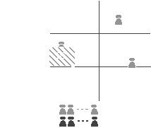
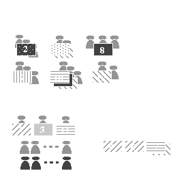

Engineering Ethnography in the Home
Michael Mateas, Tony Salvador, Jean Scholtz, Doug Sorensen
- Intel Corporation
- JF3-210
- 2111 NE 25th Avenue
- Hillsboro, OR 97124
- Tel: (503) 264-5766
- E-mail: {michael_j_mateas, tony_salvador, jean_scholtz, doug_l_sorensen}@ccm.jf.intel.com
ABSTRACT
To inform the design and development of domestic computing systems, we performed a pilot ethnographic study of the home. The resulting model of domestic activity shows that the implicit design assumptions of the personal computer are inappropriate for the home. Our model suggests that small, integrated, computational appliances are a more appropriate domestic technology than the monolithic PC.
Keywords
ethnography, home computing, ubiquitous computing
UNDERSTANDING THE HOME
The computer industry has a strong interest in selling computer technology into the home. Yet there are few sources of knowledge on how this technology fits into the home. Venkatesh [3, 4] provides a valuable analysis of home computing diffusion trends. Kraut's HomeNet project [2] provides valuable quantitative data regarding Internet use in the home. However, in order to define future domestic technologies, we need a more complete model of daily home life. Towards this end we ran a pilot ethnographic study with ten families. During the course of this project we developed new data collection methods and a spatial, temporal and social model of the home.
METHOD
Preliminaries
Two of us went on each home visit. We arrived around dinner time, bringing a pizza dinner with us. The meal provided an opportunity for the family to grow more comfortable with us and for us to unobtrusively gather background information. After dinner we took a tour through the home. During the tour we noted the location of artifacts and the layout of space. This also gave us the opportunity to gather preliminary information about the distribution of activities in the home. All of our conversation, with the exception of the home tour, was recorded on video tape.
Day Walkthrough
After the tour we separated, one of us going off with the adults and one with the children (all of our families had children). The goal of this phase of the visit was to gain a detailed understanding of a typical day in their home. First we gathered an overview of repeating weekly and monthly activities (sports practice, music lessons, etc.). Then we picked a recent typical day (i.e. not a day with an activity which occurs only a couple times a month) for a detailed walkthrough. To facilitate recall during this part of the interview, we used a flannel board with a large number of felt pieces representing rooms, people, artifacts and activities. After laying out their house on the flannel board, family members physically manipulated the pieces as they walked through their day. The visual and tactile engagement of the board facilitates recall and keeps the conversation grounded.
MODEL
Ethnographic studies yield an incredible amount of data. The challenge for product developers is to model the data in a manner which actively facilitates product definition and design. The model should also be compelling and clear so that people with different organizational roles and backgrounds can easily grasp it's essence [1]. The model we derived organizes the data around the dimensions of space, time and social communication. To arrive at this model, each family team (2 people) first met separately to develop a shared understanding of the family they visited. Then we all met together to look for recurrent themes and structures across families.
Before presenting this model, it is useful to look at the implicit model of space, time and communication in the home which is implied by the current design of personal computers.
Implicit Model of Space, Time and Communication
The modern personal computer still carries the design inertia of it's evolution in an office environment. It is designed to be used in one place within an equipartitioned space (no space has greater or lesser significance), and in large time blocks with unproblematic transitions between use and non-use. When used for communication, it supports

communication with "ghosts in the machine" (strangers), providing no special support for collocated and remote family and friends. In fact, collocated family must be actively ignored while using the machine.
Derived Model of Space, Time and Communication
The model below reflects the complexities of space, time and social home life revealed by our data. Space in the home is not equally significant but rather exhibits behavioral clusters. For example, families spend most of their time in the Command, Control and Hang-out space (often corresponds to family room and kitchen). This is where family members greet each other, discuss their day, use the phone, share the same space while performing different activities, etc. Yet in every home we found the PC in the Work Space. Even when the PC is physically in the family room, it's remote corner is not part of the Hang-out space.

Time is definitely not structured in large blocks of free time surrounded by non-free time. Rather, the day consists of a large number of small blocks of time, each of which is constrained to varying degrees. The shaded blocks in the diagram represent blocks of time coded according to the type of time constraint and numbered chronologically. Free time is a myth. In most instances, some form of external constraint affects the structure of time.
Finally, most communicative activities take place between collocated family members supplemented by contact with remote family and friends. Within the family value system, this collocated time is highly valued.
CONCLUSION
The office appliance view of the PC assumes that the PC is used in one place, in large blocks of time, by a single user concentrating on instrumental tasks. However, family activity is distributed throughout multiple spaces of varying significance. Much of this activity can be characterized as communication to support emotional bonding rather than the carrying out of instrumental tasks. Most of the time members of the family are collocated rather than alone. Finally, most communication outside of the home is with family and friends. Yet recent research in computer mediated communication has focused on large virtual public spaces which have no built-in relationship to real world social structures. The data imply that ubiquitous computing, in the form of small, integrated computational appliances supporting multiple collocated users throughout the home, is a more appropriate domestic technology than the monolithic PC.
REFERENCES
- Ireland, C. and Johnson, B. Exploring the future in the present. Design Management Journal. Spring 1995, 57-64.
- Kraut, R., Scherlis, W., Mukhopadhyay, T., Manning, J., Kiesler, S. Homenet: A study of electronic communication by families and the transformation of home computing.
http://homenet.andrew.cmu.edu/hci/done/report2.html
- Nicosia, F. and Venkatesh, A. The diffusion of home computing phenomenon: A longitudinal analysis of patterns of use. Working paper, University of California, Irvine.
- Vitalari, N., Venkatesh, A., and Gronhaug, K., Computing in the home: Shifts in Time Allocation Patterns of Households. Communications of the ACM. 28, 5 (May 1985), 512-522.